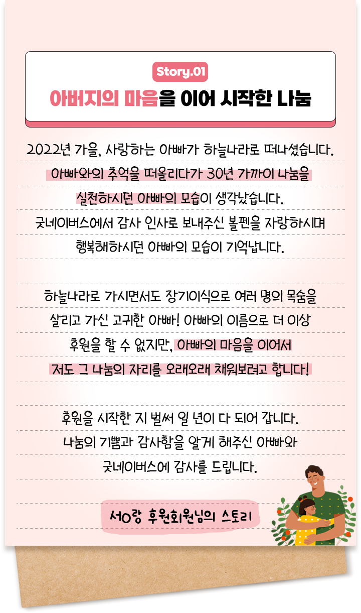

아버지의 마음을 이어 시작한 나눔
2022년 가을, 사랑하는 아빠가 하늘나라로 떠나셨습니다. 아빠와의 추억을 떠올리다가 30년 가까이 나눔을 실천하시던 아빠의 모습이 생각났습니다.
굿네이버스에서 감사 인사로 보내주신 볼펜을 자랑하시며 행복해하시던 아빠의 모습이 기억납니다.
하늘나라로 가시면서도 장기이식으로 여러 명의 목숨을 살리고 가신 고귀한 아빠! 아빠의 이름으로 더 이상 후원을 할 수 없지만, 아빠의 마음을 이어서 저도 그 나눔의 자리를 오래오래 채워보려고 합니다!
후원을 시작한 지 벌써 일 년이 다 되어 갑니다.
나눔의 기쁨과 감사함을 알게 해주신 아빠와
굿네이버스에 감사를 드립니다.
서O랑 후원회원님의 스토리